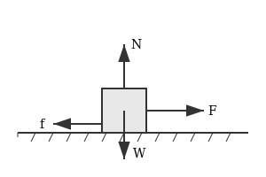
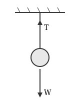
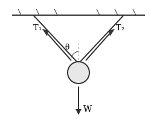
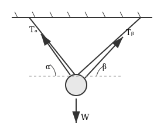
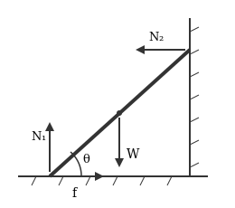

靜力平衡
Static Equilibrium
平衡條件
當物體處於靜止狀態且保持靜止，即為「靜力平衡」。
ΣF = 0 ，Στ = 0
合力為零、合力矩為零
實用分解
ΣFₓ = 0（水平）・ΣFᵧ = 0（垂直）・Στ = 0（力矩）
ΣFₓ = 0（水平）・ΣFᵧ = 0（垂直）・Στ = 0（力矩）
常見的力
| 力 | 符號 | 方向 |
|---|---|---|
| 重力 | W, mg | 鉛直向下，作用於質心 |
| 正向力 | N | 垂直接觸面，指向物體 |
| 摩擦力 | f | 平行接觸面，f ≤ μₛN |
| 張力 | T | 沿繩方向 |
畫受力圖
- 確定研究對象
- 畫重力（從質心向下）
- 找接觸點，畫正向力與摩擦力
- 畫其他力（張力、外力）
- 檢查：每個力都要有來源
情境分析
水平面上的物體

- 水平：F = f
- 垂直：N = W = mg
斜面上的物體

- 沿斜面：f = mg sin θ
- 垂直斜面：N = mg cos θ
靜摩擦臨界：tan θ ≤ μₛ
單繩懸掛

- T = W = mg
雙繩懸掛（對稱）

- 垂直：2T cos θ = W
- 張力：T = W / (2 cos θ)
角度越水平（θ 越大），張力越大
雙繩懸掛（不對稱）

α、β 為兩繩與水平的夾角：
- 水平：Tₐ cos α = Tᵦ cos β
- 垂直：Tₐ sin α + Tᵦ sin β = W
靠牆的梯子

梯子長 L，與地面夾角 θ，牆面光滑：
- 水平：f = N₂
- 垂直：N₁ = W
- 力矩（對底端）：N₂ · L sin θ = W · (L/2) cos θ
選在未知力最多的點當支點，可消掉那些力的力矩
練習
Practice 01
質量 5 kg 的物體靜止在傾角 30° 的斜面上。求正向力 N 與靜摩擦力 f。（g = 10 m/s²）
W = mg = 50 N
N = W cos 30° = 50 × (√3/2) ≈ 43.3 N
f = W sin 30° = 50 × 0.5 = 25 N
Practice 02
重 100 N 的招牌被兩條繩子對稱懸掛，每條繩子與垂直線夾角 45°。求張力 T。
2T cos 45° = W
T = 100 / (2 × √2/2) = 100 / √2 ≈ 70.7 N
Practice 03
物體重 W，繩 A 與水平夾角 60°，繩 B 與水平夾角 30°。求 Tₐ 和 Tᵦ。
水平：Tₐ × 0.5 = Tᵦ × (√3/2) → Tₐ = √3 Tᵦ
垂直：1.5 Tᵦ + 0.5 Tᵦ = W → 2 Tᵦ = W
Tᵦ = W/2，Tₐ = √3W/2
重點整理
- 靜力平衡 = 合力為零 + 合力矩為零
- 斜面：N = mg cos θ，f = mg sin θ
- 懸掛：角度越水平，張力越大
- 力矩：選適當支點可消掉未知力
- 畫受力圖是解題關鍵